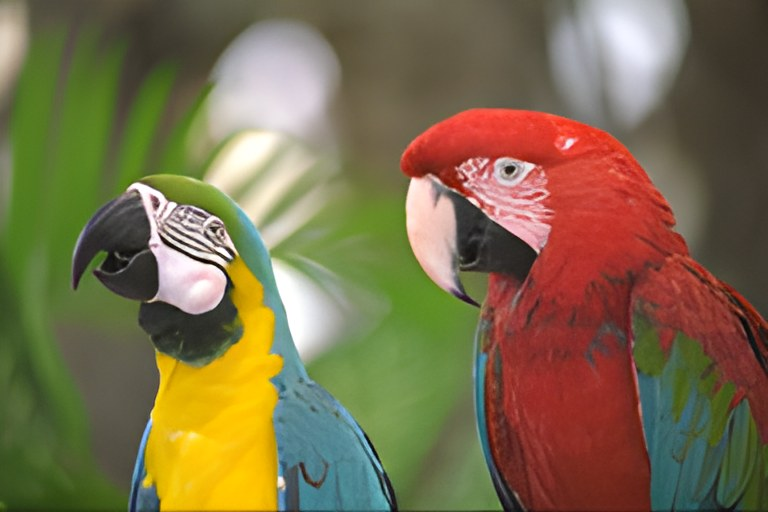
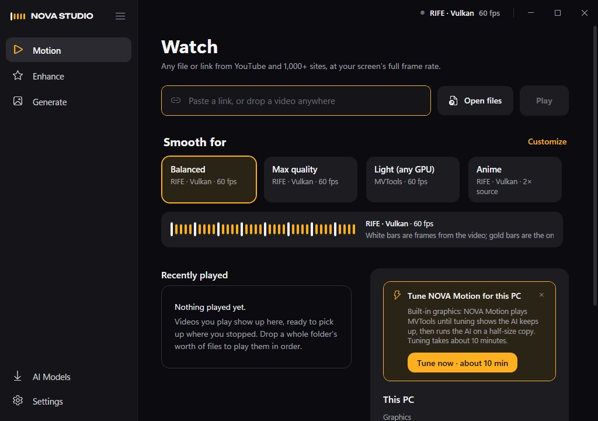
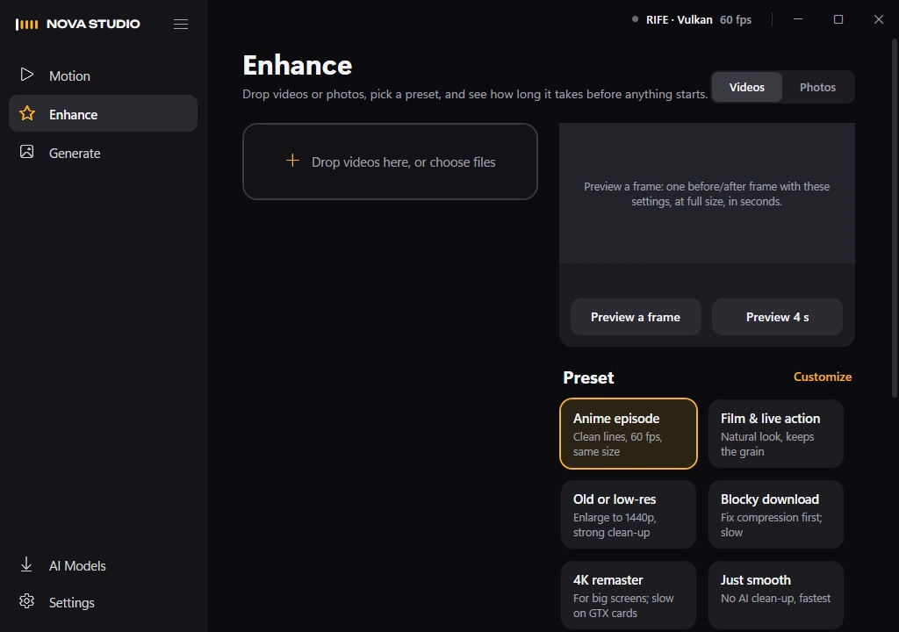
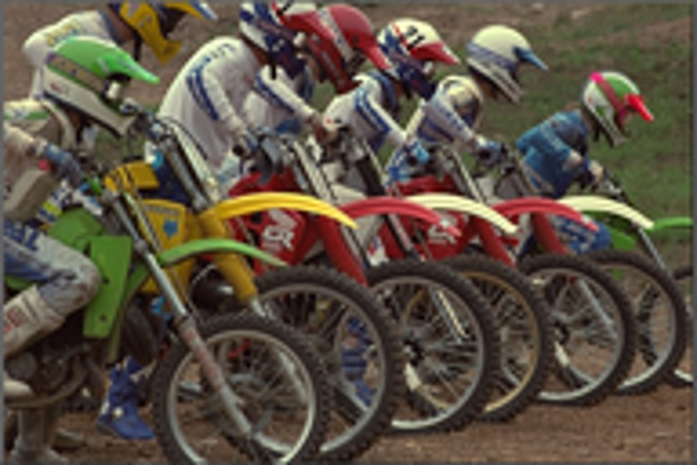
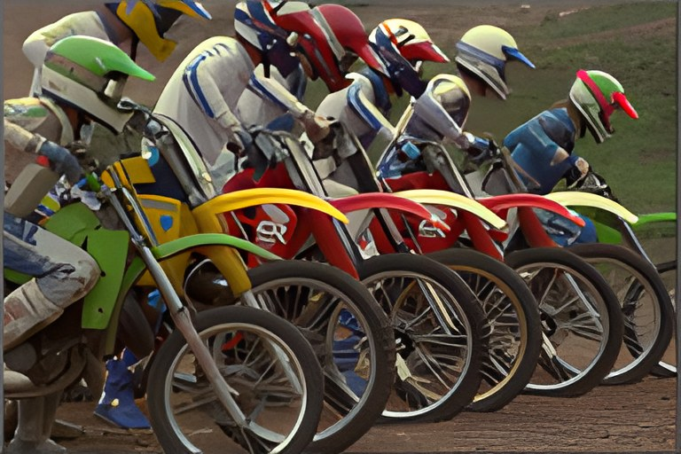
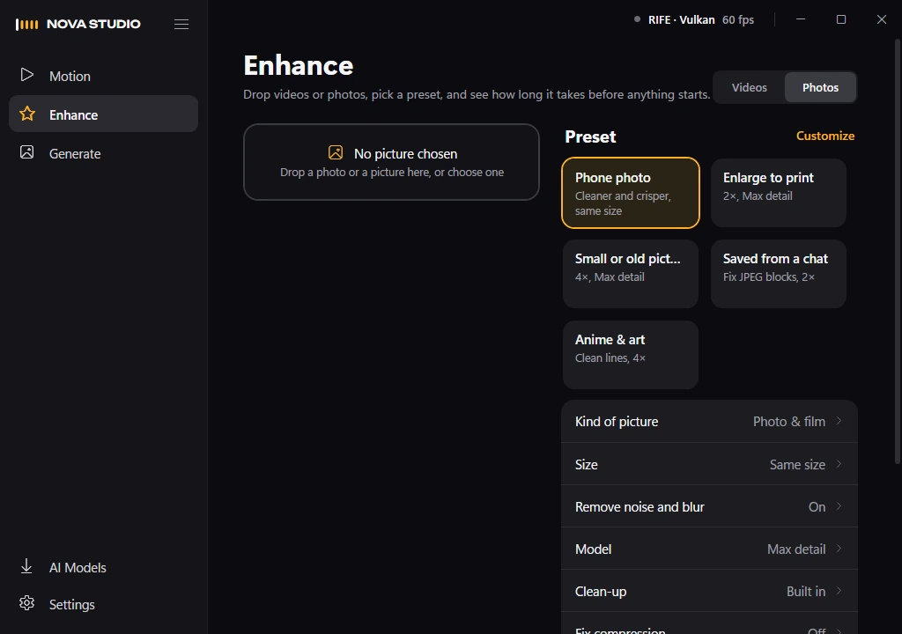
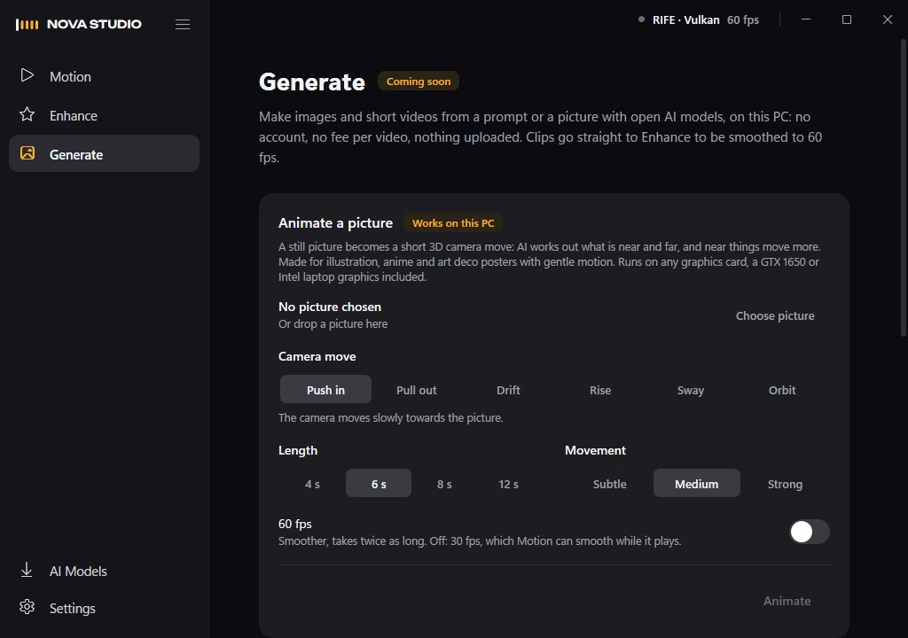
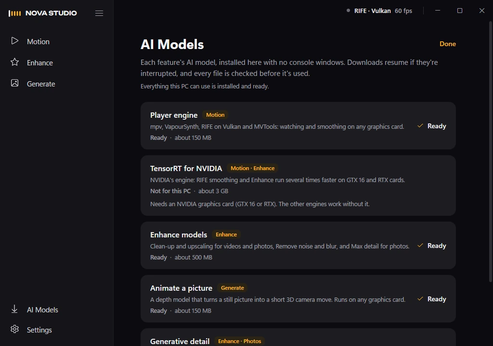

Free and open source · Windows
AI for your videos and photos, on your own PC.
Smooth any video to your screen's frame rate as it plays. Clean up and enlarge videos and photos, add real detail with generative AI, bring still pictures to life. Nothing is uploaded, nothing is paid per use, and it runs even on a GTX 1650 laptop.

Before · 192 × 128, enlarged 4× NOVA Enhance · Max detail 4×Drag to compare. A 192 × 128 picture made 4× larger: the usual way (bicubic) and with Max detail (Real-ESRGAN), the model's own result, nothing retouched. Photo: Kodak test set.
Motion
Watch at your screen's full frame rate.
Films and most online video are made at 24 or 25 frames a second, so pans judder on a 60, 120 or 144 Hz screen. NOVA Motion makes the frames in between with AI, live, while you watch. The frames from the video itself are never touched.
- Fits your graphics card. A one-time tuning run measures each AI model on your PC, and the engine uses the best one that keeps up. On cards like a GTX 1650 the AI works on a half-size copy, four times less work.
- YouTube and 1,000+ sites. Paste a link, or send the video you're watching from Chrome or Edge with the browser extension. It picks up where you stopped.
- Steady, never stuck. If frames start dropping it steps to a lighter setting by itself instead of stuttering. One click plays without smoothing.
- A player like the best ones. Seek previews, Skip intro, picture in picture, subtitles, night mode for quieter explosions and clearer voices, live sharpening and Anime4K.

| PC | Video | What happened |
|---|---|---|
| RTX 4070 desktop | 1080p film, 24 fps to 60 | Smooth, RIFE 4.6 on TensorRT at full size |
| GTX 1650 laptop, 144 Hz | 1080p film, 24 fps to 72 | Smooth, the AI at half size |
| GTX 1650 laptop, 144 Hz | 25 fps video | Plays at 50, the most this card keeps up with |
| RTX 4070, 4K screen | 4K YouTube, 24 fps | Now smoothed at 1080p and enlarged by the player; at full 4K the CPU made only about 20 frames a second |
Real playback with the settings NOVA Motion picked by itself. Measure your own PC with benchmark.cmd and share it in a GitHub issue.
Enhance videos
Cleaner, sharper, smoother copies.
Pick a preset and see how long it will take on your PC before anything starts. AI cleans and enlarges every frame up to 8K, RIFE makes it 60 fps, and the copy plays smoothly anywhere: a phone, a TV, an upload.
- Presets for real videos. Anime episode, Film & live action, Old or low-res, Blocky download, 4K remaster, Just smooth. Every choice is one tap away in Customize.
- See it first. Preview one full-size before/after frame in seconds, or 4 seconds of video, before you spend an hour exporting.
- The right model for the picture. Real-ESRGAN for film and live action, Real-CUGAN for anime and art, DPIR to fix compression blocks.
- Before/after clips to share. A labelled side-by-side or split, made for posting.

Enhance photos
More detail than the photo had.
One picture can take the heaviest models a whole video can't. Enlarge to print, fix pictures saved from chats, remove blur, or let generative AI draw new detail that fits.


Generative detail New
- It looks at the whole picture. SeedVR2, a diffusion model, makes eyelashes, fur, skin texture and the crumb of bread where a phone smeared them, instead of only sharpening what's there. No prompt: the photo is its context.
- Only where you want it. Drag over a face or a pet to generate just that part, blended into the rest. Strength mixes in the original for a natural look.
- Honest about time. On a GTX 1650 (4 GB) about 90 seconds a megapixel: a face in about a minute, a 12 MP photo about 20 minutes. Much faster on RTX cards. Needs an NVIDIA card with 4 GB or more.
- Remove noise and blur (NAFNet) and Max detail (Real-ESRGAN) run on any card, in seconds.

Generate
Bring a still picture to life.
Animate a picture turns a still into a short 3D camera move: push in, drift, rise, sway or orbit. AI works out what is near and far, and near things move more. Made for illustration, anime and posters, and it runs on any graphics card, laptop graphics included.
- Straight into the rest of the studio. Clips land in Videos\NOVA Studio, ready to smooth to 60 fps or enlarge in Enhance.
- Coming next: images and short clips from open models (Flux, SDXL, Wan 2.2). The page already checks what your PC can run.

Setup
Install only what you use, inside the app.
The AI Models page lists every part with what it unlocks, its size for your card and whether this PC can run it. Each feature offers its own download right where you need it.
- Real progress. Megabytes, speed and time left, with no console windows.
- Pause and resume. A download carries on where it stopped, even after closing the app. Every file is checked before it's used.
- No surprises. It checks there's room on the drive first, and says why a part isn't for this PC.
- Ready for your card. Models are prepared for your graphics card once, right after they download, so a first export never stalls.

Your PC
What runs on your graphics card.
| Graphics | Motion | Enhance | Generative detail |
|---|---|---|---|
| NVIDIA RTX | RIFE on TensorRT, at your screen's refresh rate | TensorRT, fastest | 8-bit model on 8 GB and up |
| NVIDIA GTX 16 | RIFE on TensorRT, the AI at half size | TensorRT | 4-bit model on 4–6 GB |
| AMD, Intel, other NVIDIA | RIFE on Vulkan when it keeps up, MVTools otherwise | Vulkan | Not yet |
Windows 10 or 11. Animate a picture, Max detail and Remove noise and blur run on every card.
Questions
Good to know.
Is it really free?
Yes. NOVA Studio is free software under the GNU GPL v3.0, made by Novabit. There's no account, no subscription and no watermark, and the AI models it uses all allow commercial use.
Is anything uploaded?
No. Every model runs on your own graphics card. The only things NOVA Studio downloads are its parts (from the AI Models page) and the online videos you ask it to play.
Will it work on my laptop?
Very likely. It's built and tested on a GTX 1650 laptop with 4 GB. Motion measures your card once and picks what keeps up, and every feature says up front whether this PC can run it.
How is generative detail different from sharpening?
Sharpening and classic upscaling can only make existing edges crisper. Generative detail draws new detail that fits the scene, the way a painter would, which is why it can bring back texture a phone's processing smeared away. It's slower, so you can apply it to just a part of the photo.
Does it replace SVP or Topaz?
It covers the same ground, live motion smoothing and AI enhancement, as one free, open app. It's an independent project that shares no code with either.
Try it on your own videos.
Download the installer, or build the latest from source with one command. Each feature offers its AI model the first time you use it.
Version 0.3.0 for Windows 10 and 11. No admin rights needed; Windows may show a SmartScreen warning because the installer isn't code-signed yet.